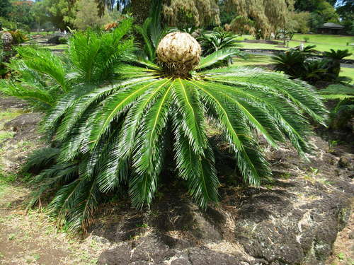
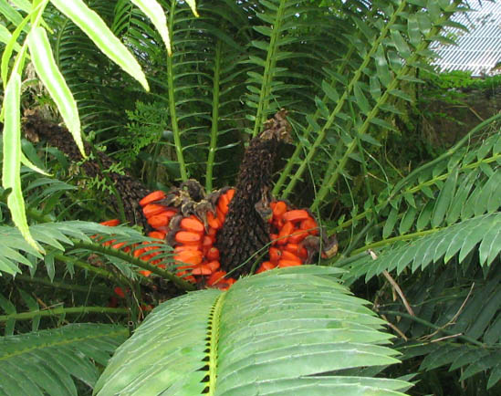

Cycadaceae

- Tronco cilíndrico poco ramificado
- Hojas pinnadas grandes
- Apariencia similar a palmeras
- Conos terminales
- Dioicas (sexos separados)
- Crecimiento lento
Ejemplo: Cycas
Zamiaceae

- Troncos subterráneos o cortos
- Hojas compuestas pinnadas
- Folíolos rígidos
- Conos masculinos y femeninos separados
- Muchas especies tropicales
Ejemplos: Zamia, Ceratozamia, Dioon